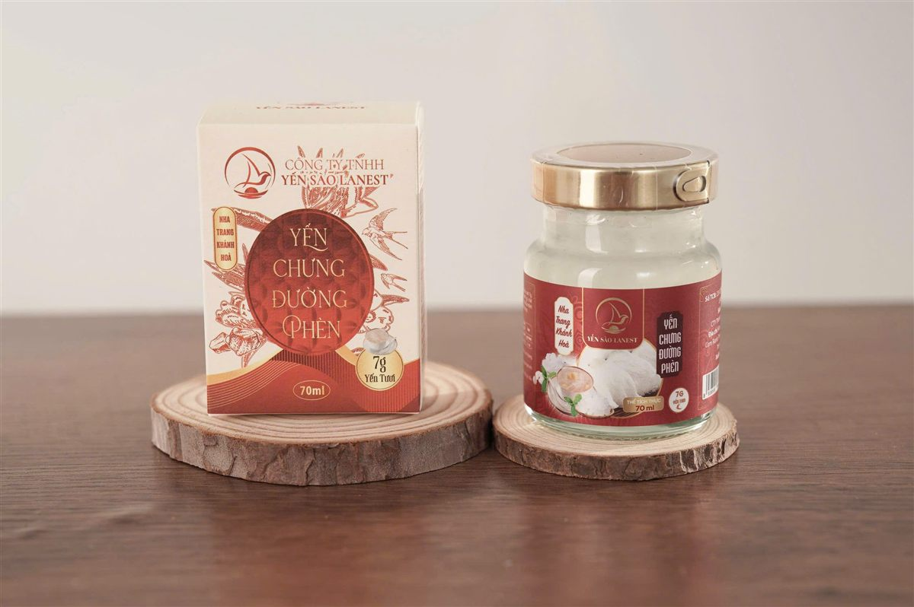
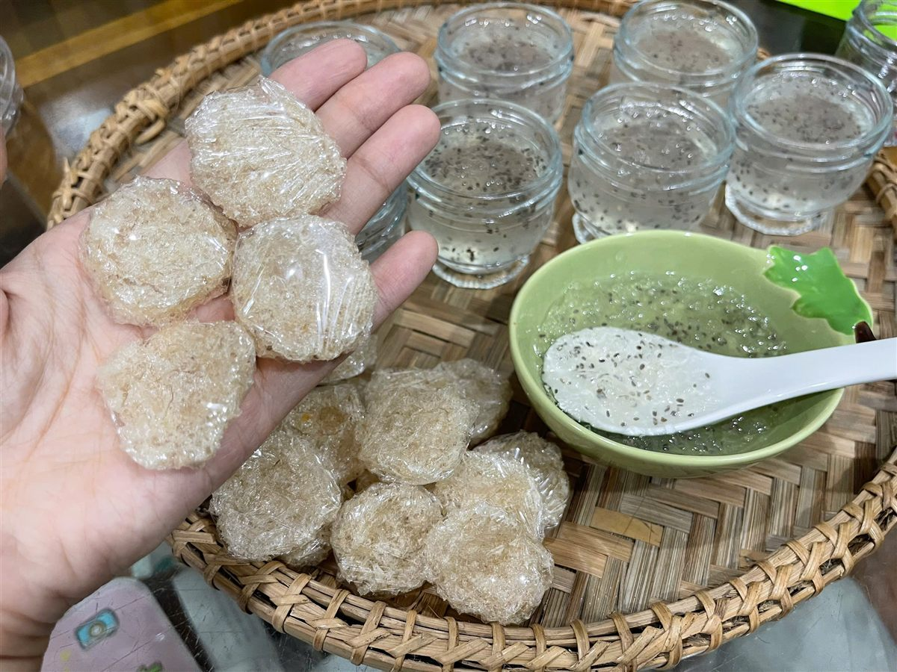

Vì Sao Nên Chọn Yến Hũ Chưng Sẵn Thay Vì Tự Chưng Tại Nhà?
Yến Sào Lanest · Đăng ngày 07/10/2026

Nhiều anh chị nhắn hỏi Lanest một câu rất thật: nên mua yến hũ chưng sẵn hay tự chưng ở nhà cho cả nhà dùng? Câu trả lời không nằm ở loại nào "tốt hơn", mà ở chuyện nhà mình có bao nhiêu thời gian, cần chủ động đến đâu và dùng yến theo nhịp nào. Bài này đặt hai cách cạnh nhau, nói rõ mỗi cách mất gì, được gì, để anh chị tự chọn cho đúng.
Hũ yến chưng đường phèn 7g yến tươi, hũ thủy tinh 70ml, mở nắp là dùng được
1. Tự chưng yến tại nhà thật ra mất những bước nào?
Tự chưng không khó, nhưng cần thời gian và để ý. Một mẻ yến chưng cơ bản đi qua các bước sau:
- Ngâm yến: bằng nước sạch ở nhiệt độ thường, không dùng nước ấm hay nóng. Yến tinh chế ngâm từ khoảng 10 phút (yến vụn) đến 30–45 phút (chân yến). Tổ yến thô cần ngâm khoảng 1–2 giờ, rồi còn phải tự nhặt lông trước khi chưng.
- Cho vào thố sứ hoặc hũ thủy tinh chịu nhiệt, đổ nước vừa ngập yến, có thể thêm vài lát gừng, táo đỏ, kỷ tử, hạt sen tùy khẩu vị.
- Chưng cách thủy lửa nhỏ khoảng 20–30 phút. Chưng quá lâu yến sẽ nát, mất độ sợi.
- Thêm đường phèn trước khi tắt bếp khoảng 5 phút, hoặc nấu nước đường riêng rồi rót vào sau.
- Bảo quản phần dư: để nguội, đậy kín, cất ngăn mát và dùng hết trong 1–2 ngày.
Cộng cả ngâm, chưng và dọn dẹp, mỗi mẻ thường chiếm của anh chị một buổi. Hướng dẫn chi tiết từng bước có trong bài hướng dẫn chưng yến đúng cách.
2. Yến hũ chưng sẵn là gì, có gì trong hũ?
Yến hũ chưng sẵn là yến đã được chưng trong xưởng, đóng hũ thủy tinh 70ml và tiệt trùng. Anh chị chỉ việc mở nắp dùng ngay, hoặc chưng cách thủy lại cho ấm nếu thích. Ở Lanest có hai dòng hũ, và hai dòng này khác nhau thật sự, nên Lanest nói rõ:
- Yến hũ 7g yến tươi (14 vị): mỗi hũ có 7g yến tươi, đường phèn và vị kèm theo như táo đỏ, hạt sen, nhân sâm, gừng, saffron, vị dâu cho trẻ em... Thành phần còn có collagen thủy phân, chất xơ inulin, chất điều chỉnh độ acid, chất ổn định và hương yến tổng hợp. Thành phần ghi đầy đủ trên nhãn từng vị.
- Tổ yến chưng nguyên chất 100% (3 vị: đường phèn, đông trùng hạ thảo, gừng): mỗi hũ có 1,5g tổ yến, nhãn ghi tương đương 15g yến tươi, chỉ gồm nước tinh khiết, tổ yến, đường phèn và vị kèm theo, không chất phụ gia.
Nói cách khác: dòng 7g hợp với người thích uống nhẹ, đổi vị mỗi ngày; dòng nguyên chất hợp với người muốn hũ đậm yến, thành phần đơn giản nhất.
3. So sánh nhanh: yến hũ chưng sẵn và yến tự chưng
| Tiêu chí | Yến hũ chưng sẵn | Yến tự chưng tại nhà |
| Thời gian chuẩn bị | Mở nắp là dùng | Ngâm, chưng, canh lửa, dọn dẹp |
| Dụng cụ | Không cần | Thố sứ hoặc hũ chịu nhiệt, nồi chưng cách thủy |
| Bảo quản | Chưa mở nắp: nơi khô ráo, thoáng mát, dùng trong hạn ghi trên hũ. Đã mở: để lạnh | Ngăn mát, dùng hết trong 1–2 ngày |
| Lượng yến mỗi lần | Cố định theo hũ, ghi trên nhãn | Tự cân, tự chia |
| Độ ngọt, độ đặc | Theo công thức từng vị | Tự điều chỉnh |
| Mang theo đi làm, đi xa | Dễ, hũ nhỏ gọn | Khó, phải giữ lạnh |
4. Khi nào nên chọn yến hũ chưng sẵn?
Từ những gì khách và đại lý của Lanest hay chia sẻ, yến hũ chưng sẵn hợp nhất với những trường hợp sau:
- Nhà bận rộn: hai vợ chồng đi làm, không ai rảnh để ngâm, nhặt, canh lửa. Mua yến khô về rồi để dành mãi không chưng là chuyện rất hay gặp.
- Muốn dùng đều đặn: các tài liệu hướng dẫn của Lanest luôn nhắc dùng yến đều đặn thay vì ăn dồn dập rồi bỏ ngang. Hũ có sẵn trong tủ thì dễ giữ nhịp hơn.
- Cần mang theo: đi làm, đi công tác, gửi cho con đi học xa, mang vào viện thăm người thân.
- Nhà nhiều khẩu vị: người lớn uống đông trùng hạ thảo, ông bà thích hạt sen, trẻ con thích vị dâu. Mỗi người một hũ, không phải nấu nhiều nồi.
- Làm quà: hũ nguyên nắp, có nhãn, có hạn sử dụng rõ ràng, người nhận không phải biết cách chưng.

Yến tinh chế dạng viên và một mẻ yến chưng hạt chia chia ra hũ nhỏ: tự chưng thì chủ động, nhưng cần thời gian
5. Khi nào tự chưng vẫn là lựa chọn tốt?
Lanest bán cả yến hũ lẫn yến tinh chế, nên nói thật: có những lúc tự chưng hợp hơn.
- Anh chị muốn tự quyết định lượng yến, độ ngọt, độ đặc, hoặc muốn chưng không đường.
- Anh chị thích tự kết hợp táo đỏ, kỷ tử, hạt sen theo công thức riêng của gia đình. Có thể tham khảo bài yến chưng táo đỏ hạt chia.
- Nhà có thời gian và thích tự tay nấu, xem việc chưng yến là một niềm vui.
Nếu chọn tự chưng, yến tinh chế (đã làm sạch lông) sẽ đỡ công hơn tổ yến thô rất nhiều. Yến tinh chế Lanest đóng hộp 50g và 100g. Muốn hiểu rõ hai loại khác nhau ra sao, anh chị xem bài tổ yến thô và yến tinh chế khác nhau thế nào, và nhớ đọc bài cách bảo quản tổ yến để yến khô không bị ẩm.
6. Vài lưu ý chung dù chọn cách nào
- Đọc nhãn trước khi mua: xem lượng yến mỗi hũ, thành phần, hạn sử dụng, tem niêm phong còn nguyên.
- Không ăn yến ngay sau bữa chính, nên dùng khi bụng nhẹ. Xem thêm bài hướng dẫn dùng yến đúng cách.
- Yến hũ đã mở nắp thì để lạnh, không để ở nhiệt độ phòng. Dòng nguyên chất ngon hơn khi uống lạnh; vị gừng nên lắc nhẹ trước khi uống.
- Yến là thực phẩm, không phải thuốc. Người đang điều trị bệnh, phụ nữ mang thai hoặc người cần kiêng đường nên hỏi ý kiến bác sĩ trước khi dùng thường xuyên.
Câu hỏi thường gặp
Yến hũ chưng sẵn có cần hâm nóng không?
Không bắt buộc. Có thể mở nắp dùng ngay, hoặc chưng cách thủy lại nếu thích uống ấm. Nhiều người thích uống lạnh, nhất là dòng nguyên chất.
Yến hũ 7g yến tươi và hũ nguyên chất khác nhau thế nào?
Hũ 7g có 7g yến tươi, nhiều vị, có thêm collagen, chất xơ, chất ổn định và hương yến tổng hợp. Hũ nguyên chất có 1,5g tổ yến (tương đương 15g yến tươi theo nhãn), chỉ gồm nước tinh khiết, tổ yến, đường phèn và vị kèm theo, không phụ gia.
Yến tự chưng để được bao lâu?
Để ngăn mát, đậy kín và dùng hết trong 1–2 ngày. Tốt nhất là chưng vừa đủ lượng ăn trong 1–2 ngày.